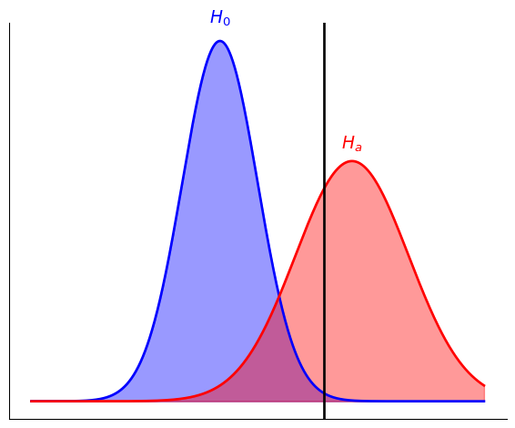
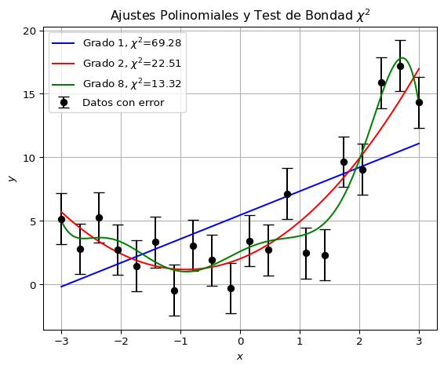
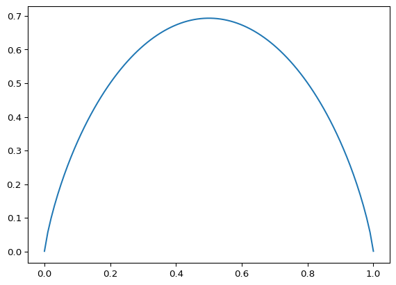

Testeo de Hipótesis y Entropía
Testeo de Hipótesis
Hipótesis estadísticas
Normalmente tenemos una pregunta y queremos usar los datos disponibles para responderla. Ya vimos cómo podemos responder a la pregunta de cuál es el valor de algún parámetro: Usamos un estimador y reportamos un intervalo de confianza.
Hay muchas otras preguntas que podemos responder. Una clase grande de preguntas se pueden formular como hipótesis: Suponemos algo sobre los datos y queremos intentar confirmar o descartar la hipótesis.
Normalmente sólo está bien definido cómo rechazar una hipótesis. Por esto, en vez de aceptar una hipótesis lo que hacemos es compararla con una hipótesis nula. Por ejemplo queremos saber si detectamos una nueva partícula, lo que hacemos es formular dos hipótesis:
Hipótesis nula (\(H_0\)): No hay una nueva partícula, lo que vimos es producido por el ruido del detector.
Hipótesis alternativa (\(H_a\)): Se detectó una nueva partícula.
Lo que hacemos entonces es comparar \(H_0\) con \(H_a\). Decimos que detectamos la nueva partícula cuando rechazamos la hipótesis nula.
De aquí vienen frases tan enredadas como: “No tenemos suficientes datos para rechazar la hipótesis nula”. Esas tres negaciones la hacen una frase muy confusa. Lo que quiere decir esto es que la hipótesis nula es compatible con lo que se observó, pero tal vez con más mediciones logremos rechazarla. En este caso no podemos concluir que vimos algún efecto.
Normalmente rechazamos una hipótesis si las mediciones caen en una región de baja probabilidad para esa hipótesis. Llamemos \(R_a\) esa tal región. Puede ser por ejemplo un rango de valores para la curvatura del universo, o para la masa de una partícula.
Tipos de hipótesis
Hipótesis simple: Especifica completamente la distribución de probabilidad, sin dejar parámetros libres. Por ejemplo: \(\mu = 5\) para una distribución normal con varianza conocida. Raras veces se puede formular una hipótesis de esta manera, pero es útil para entender cómo testear hipótesis.
Hipótesis compuesta: No especifica completamente la distribución de probabilidad. Por ejemplo: \(\mu < 5\) para una distribución gaussiana con varianza conocida. Otro ejemplo: Los parámetros medidos son compatibles con mi modelo físico.
Tipos de errores
Cuando ponemos una hipótesis a prueba, hay cuatro resultados posibles.
- La hipótesis es verdadera y la aceptamos.
- La hipótesis es falsa y la rechazamos.
- La hipótesis es verdadera y la rechazamos. Esto se llama error de tipo I o falso negativo.
- La hipótesis es falsa y la aceptamos. Esto se llama error de tipo II o falso positivo.
La probabilidad de cometer errores de tipo I se llama significancia, normalmente denotada \(\alpha\). Al comparar una hipótesis nula con una alternativa, \(\alpha\) es la probabilidad de rechazar la hipótesis nula siendo esta verdadera \(\alpha = P[R_a | H_0]\).
La probabilidad de rechazar correctamente una hipótesis falsa se llama la potencia, denotada por \(\beta\). Al comparar una hipótesis nula con una alternativa, \(\beta\) es la probabilidad de rechazar la hipótesis nula, siendo esta falsa \(\beta = P[R_a | H_0]\). Entonces la probabilidad de cometer un error de tipo II es \(1 - P[R_a | H_0] = 1 - \beta\).
En un mundo ideal nos gustaría reducir los errores de ambos tipos, es decir \(\alpha\) pequeño y \(\beta\) alto. Pero normalmente reducir los de tipo I aumenta los de tipo II y vice versa. Ilustremos con un par de imágenes:
En la Figura 1 supongamos que la región de exclusión es a la derecha de la barra negra. Si la hipótesis nula es verdadera, la distribución de probabilidad es la azul. Si la alternativa es verdadera, la distribución de probabilidad es la roja. Vemos que escoger esa región de exclusión nos da una probablidad muy chiquita de excluir la hipótesis nula en caso de que sea verdadera (área bajo la curva azul a la derecha de la línea). Es decir, es poco probable que rechacemos la hipótesis nula por error. Pero por otro lado si la hipótesis alternativa es verdadera, tenemos una probabilidad relativamente alta de aceptar la hipótesis nula (área bajo la curva roja a la izquierda de la línea). Es decir que es bastante probable que por error no rechacemos la hipótesis nula. En este caso vemos que el criterio no es muy potente: No nos permitiría detectar un nuevo fenómeno.

En la Figura 2 tenemos el ejemplo contrario. Ahora la probabilidad de no rechazar erróneamente la hipótesis nula es baja. Es decir, podemos “detectar” más fácilmente el nuevo fenómeno, pero si la hipótesis nula es la correcta, corremos más riesgo de rechazarla.
Test de Neyman-Pearson
Dos hipótesis simples
Supongamos que la hipótesis nula es que algún conjunto de parámetros que determinan la distribución de probabilidad toma el valor \(\boldsymbol{\theta}_0\) y la alternativa que toman el valor \(\boldsymbol{\theta}_a\). En este caso existe un test óptimo. Escogemos la región de exclusión como todos aquellos puntos para los cuales \[ \lambda \equiv \frac{L(\boldsymbol{\theta}_0)}{L(\boldsymbol{\theta}_a)} \] toma un valor menor que algún valor crítico \(\lambda\).
Dada una sensitividad \(\alpha\) fija, este test es el que tiene menor \(\beta\). Es decir, es el test más potente para una dada sensitividad.
Hipótesis compuestas
Cuando las hipótesis son compuestas no tenemos un test con las propiedades del de Neyman-Pearson. Sin embargo podemos definir algo análogo usando la máxima verosimilitud. Es decir, tomamos \(\lambda = L(\hat{R}_0)/L(\hat{S})\) donde \(L(\hat{R}_0)\) es el valor máximo que toma la verosimilitud en la región que respeta la hipótesis nula, y \(L(\hat{S})\) es el valor máximo que toma la verosimilitud en la unión de las regiones de la hipótesis nula y la alternativa.
En la práctica hacer esto nos da un test que es razonablemente potente. Además tiene buenas propiedades cuando el número de datos \(n\) es grande. En particular, suponga que la hipótesis nula es que los \(k\) parámetros de un modelo toman valores \(\boldsymbol{\theta} = \boldsymbol{\theta}_0\) y la hipótesis alternativa es simplemente \(\boldsymbol{\theta} \neq \boldsymbol{\theta}_0\). Entonces si \(H_0\) es verdadera, la variable \(-2\ln\lambda\) tiene una distribución aproximadamente \(\chi^2\) con \(k\) grados de libertad para \(n\) grande.
La probabilidad de obtener un valor observado de los datos bajo la hipótesis nula igual o más extremo que un cierto nivel \(p\) se lo llama el “valor-\(p\)” (\(p\)-value). Este es igual a \(\alpha\) cuando se toma la región de exclusión como la región en las colas de la distribución de probabilidad.
Bondad de Ajuste
Es un tipo de testeo de hipótesis. Nuestra hipótesis nula es que los datos están bien descritos por un modelo (el ajuste es bueno) tal que las diferencias entre los datos y las predicciones son fluctuaciones estadísticas. La hipótesis alternativa es que no lo están.
Si la distribución es aproximadamente gaussiana, y las mediciones no son independientes, podemos calcular \[ \chi^2 = \sum_{i=1}^n \frac{(y_i - f(x_i))^2}{\sigma_i^2}\,, \] entonces sabemos que esta cantidad debe seguir la distribución \(\chi^2\) con \(n - p\) grados de libertad, donde \(p\) es el número de parámetros del modelo. Si la probabilidad de obtener un valor dado de \(\chi^2\) o mayor es muy baja, rechazamos la hipótesis nula. Es decir que descartamos el modelo y el ajuste no es bueno.
Intuitivamente nos esperamos que cada punto de datos esté a \(\sim 1\sigma\) de la media. Por lo tanto si el modelo describe los datos, vemos que \(\chi^2 \sim n - p\). Restamos \(p\) porque estamos fijando \(p\) parámetros: En el caso extremo en el que tenemos \(p\) datos (y el modelo es lo suficientemente libre) nuestro modelo pasará por todos ellos.
Si \(\chi^2\) es muy grande puede ser que nuestro modelo no sea bueno o puede ser que los errores se hayan tomado demasiado pequeños. Si en cambio \(\chi^2\) es muy pequeño, lo más probable es que los errores se hayan tomado demasiado grandes.
Si los datos están correlacionados, aún podemos calcular \[ \chi^2 = (\boldsymbol{y} - \boldsymbol{f})^T C^{-1} (\boldsymbol{y} - \boldsymbol{f})\,. \]
Este test se usa mucho en la práctica. Se puede escribir una versión discreta, dividida por subintervalos, etc.
Hay muchos otros métodos de comparación de modelos, testeo de hipótesis y bondad de ajuste. Como este no es un curso de estadística no los describiremos aquí y recomendamos que el lector se refiera a los libros sugeridos.
import numpy as np
import matplotlib.pyplot as plt
# Generar datos sintéticos
x = np.linspace(-3, 3, 20)
y_real = 2 + 2*x + x**2
sigma = 2.0
y_observado = y_real + np.random.normal(0, sigma, size=x.size)
# Ajustes polinomiales
grados = [1, 2, 8]
ajustes = [np.polyfit(x, y_observado, grado) for grado in grados]
y_ajustes = [np.polyval(p, x) for p in ajustes]
# Calcular chi-cuadrado para cada ajuste
valores_chi2 = [np.sum(((y_observado - y_ajuste)/sigma)**2) for y_ajuste in y_ajustes]
# Graficar resultados
plt.figure(figsize=(6, 5))
plt.errorbar(x, y_observado, yerr=sigma, fmt='o', label='Datos con error', color='black', capsize=5)
x_suave = np.linspace(-3, 3, 200)
colores = ['blue', 'red', 'green']
for grado, ajuste, chi2, color in zip(grados, ajustes, valores_chi2, colores):
plt.plot(x_suave, np.polyval(ajuste, x_suave),
label=f'Grado {grado}, $\\chi^2$={chi2:.2f}', color=color)
plt.xlabel('$x$')
plt.ylabel('$y$')
plt.title('Ajustes Polinomiales y Test de Bondad $\\chi^2$')
plt.legend()
plt.grid(True)
plt.tight_layout()
plt.show()
# Imprimir valores de chi-cuadrado
for grado, chi2 in zip(grados, valores_chi2):
print(f'El ajuste polinomial de grado {grado} tiene chi-cuadrado = {chi2:.2f}')
El ajuste polinomial de grado 1 tiene chi-cuadrado = 69.28
El ajuste polinomial de grado 2 tiene chi-cuadrado = 22.51
El ajuste polinomial de grado 8 tiene chi-cuadrado = 13.32Información y entropía de Shannon
¿Cuánta información se obtiene cuando se sabe que ocurrió un evento de probabilidad \(p\)? \[ -\log p \] La base del logaritmo no es importante es mera convención. Si uno es físico le gusta el logaritmo natural, si uno es informático le gusta base 2, si uno en cambio es una persona normal le gusta base 10. Pero no es muy importante. Simplemente definimos un “bit de información” como \(\log 2\) en la base dada.
Por ejemplo: Suponga que se tiran tres monedas y se obtiene “cara, sello, cara”. Este evento tiene probabilidad \(1/2^3\) y entonces se obtuvo una cantidad de información igual a \[ -\log\left(\frac{1}{2^3}\right) = 3\log 2 \]
La justificación del enunciado anterior es que queremos que la información sea:
Positiva para \(p > 0\).
Decreciente \(I(p) > I(q)\) para \(p < q\): Si ocurre un evento de baja probabilidad queremos decir que obtuvimos mucha información y vice versa.
Aditiva \(I(pq) = I(p) + I(q)\): La información de la combinación de dos eventos independientes es la suma de las informaciones.
Resulta que la única función que cumple estas tres condiciones es el logaritmo.
Ahora supongamos que tenemos una moneda pesada tal que \(2/3\) de las veces sale cara mientras \(1/3\) de las veces sale sello.
Si sale cara obtuvimos \(-\log 2/3\) de información mientras si sale sello obtuvimos \(-\log 1/3\).
La información promedio obtenida en cada lanzamiento de la moneda es \[ -\frac{2}{3} \log \frac{2}{3} - \frac{1}{3} \log \frac{1}{3}\,. \]
Esta es la entropía de Shannon de este sistema.
import numpy as np
import matplotlib.pyplot as plt
ps = np.linspace(0.0001, 0.9999, 100)
h = -ps*np.log(ps) - (1 - ps)*np.log(1 - ps)
plt.plot(ps, h)
Para dos eventos con probabilidades \(p\) y \(1 - p\) la entropía es máxima cuando \(p=1/2\). Es mínima cuando \(p=1\) o \(p=0\) (cuando sabemos todo y no ganamos información con la ocurrencia de un evento).
En general para \(n\) eventos queremos encontrar el mínimo y el máximo de la entropía. Es decir los extremos de \[ H = -\sum_i p_i \log p_i\,, \] sujetos a la condición \(\sum_i p_i = 1\). Para lograrlo fijamos \(p_1 = 1 - \sum_{j = 2}^n p_i\) y calculamos la derivada respecto a \(p_i\) con \(i \neq 1\) \[ \frac{\partial}{\partial p_i} H = -\log p_i - 1 + \log p_1 + 1 = -\log \frac{p_i}{p_1} \] Esto es cero cuando \(\frac{p_i}{p_1} = 1\), es decir cuando todas las probabilidades son iguales \(p_i = 1/n\). De hecho este punto es un máximo.
Esta definición se puede generalizar a una variable continua, definimos la entropía de Gibbs como \[ H = -\int dx\, \rho(x) \log \rho(x)\,. \]
Esta entropía tiene el defecto de que puede ser negativa y no es invariante bajo cambios de variables, a diferencia del caso discreto.
La interpretación de esto depende del contexto.
El teorema de canal sin ruido de Shannon
El teorema original
Shannon era un informático (más apropiadamente un científico de la información) que introdujo su concepto de entropía para demostrar un teorema sobre comunicaciones en redes.
La pregunta es cuánto podemos comprimir la información producida por un computador para enviarla de manera eficiente a otro computador. Todos hemos usado archivos .zip. La pregunta es cuánto podemos comprimir una serie de bits.
Definimos la compresión como un mapa \(C^n\) entre las posibles secuencias \((x_1,...,x_n)\) y una cadena de bits de longitud \(nR\). Entonces la razón de compresión de este mapa es \(R\).
La descompresión del mensjae es un mapa \(D^n\) que toma una cadena de bits de longitud \(nR\) y produce \((x_1,...,x_n)\).
Un mecanismo de compresión y descompresión es confiable si \(D^n(C^n(x)) = x\) con probabilidad \(1\) cuando \(n\) tiende a infinito.
El teorema dice (asumiendo que el logaritmo en la definición de \(H\) es base \(2\))
Lamentablemente no tenemos el tiempo necesario para introducir los conceptos previos necesarios para demostrar este teorema.
Un par de consideraciones intuitivas
Consideremos una fuente que sólo produce la letra “c”. Esta fuente no contiene alguna información, no necesitamos comprimir nada.
Ahora supongamos que unos días la fuente produce la palabra “azul” y otros días la fuente produce la palabra “rojo”. En este caso podemos representar la palabra “azul” con 0 y la palabra rojo con “1”. De hecho la entropía es \(1\), necesitamos un solo bit.
En el otro extremo, supongamos que la fuente produce una cadena completamente aleatoria de “1” y “0” de longitud \(n\). No tenemos manera de comprimirla si es completamente aleatoria, la entropía es \[ H = -n\sum_{i=0}^1 \frac{1}{2}\log\frac{1}{2} = n\,, \] y necesitamos todos los \(n\) bits. Esta cadena tiene la máxima cantidad de información, no se puede comprimir.
Aquí vemos que la estadística de la fuente es importante, por eso la información está relacionada con la estadísitica.
Ahora pensemos en una fuente que transmite un mensaje en español. Resulta que los 33 caracteres del español no ocurren con igual probabilidad, las vocales son mucho más probables. Igualmente para las palabras, algunas palabras son más comunes. Idem para las parejas de palabras o frases.
Para acercarnos a ese caso, ahora pensemos en una cadena de “0” y “1” tal que el “1” aparece con probabilidad \(0.8\). Una tal cadena es \[ 111101110101111 \] Parecería que no podemos comprimir esta cadena, después de todo para el cero necesitamos el símbolo “0” y para el uno necesitamos el símbolo “1”. Esto parecería contradecir la intuición que hemos construído de entropía \[ H = -n\left(0.8\log 0.8 + 0.2 \log 0.2\right) \approx 0.5n\,. \] Pero en realidad podemos tomar cadenas de caracteres, por ejemplo de cinco caracteres. Las cinco cadenas “11110”, “11101”, “11011”, “10111”, “01111” ocurren con mucha más frecuencia que las otras, tal que podemos usar un par de bits para representarlas en vez de cinco. Jugando de esta manera nos podemos acercar a comprimir esos mensajes por un \(50\%\).
Un ejemplo de compresión
Ahora supongamos que tenemos un alfabeto de 8 caracteres que queremos comprimir, llamémoslos \(\{1,2,3,4,5,6,7,8\}\). De forma ingenua podemos representar cada caracter con 3 bits. ¿Podemos comprimirlo?
Si los 8 caracteres ocurren con igual probabilidad \(1/8\) no podemos hacer mucho \[ H = -n\sum \frac{1}{8}\log\frac{1}{8} = n\log 8 = 3n\,. \] Es decir, necesitamos \(3n\) bits para representar un mensaje de longitud \(n\).
Pero si ocurren con probabilidad diferente, podemos hacer algo mejor. Supongamos que las probabilidades son \[ \begin{multline} \{p_1 = 0.5, p_2 = 0.3, p_3 = 0.1, p_4 = 0.05, \\ p_5 = 0.025, p_6 = 0.0125, p_7 = 0.0065, p_8 = 0.006\}\,. \end{multline} \] Entonces un esquema debido a Fano consiste en:
- Ordenar las probabilidades de forma decreciente (como ya hemos hecho)
- Dividir en dos conjuntos que tengan aproximadamente la misma probabilidad. Para nosotros serán \[ \{0.5\}\,,\quad \{0.3, 0.1, 0.05, 0.025, 0.0125, 0.0065, 0.006\}\,. \]
- Los caracteres del primer conjunto se representan con el dígito \(0\), los del segundo con el dígito \(1\). \[ \begin{multline} r(0) = 1\,,\quad r(1) = \{p_2 = 0.3, p_3 = 0.1, p_4 = 0.05, \\ p_5 = 0.025, p_6 = 0.0125, p_7 = 0.0065, p_8 = 0.006\}\,, \end{multline} \]
- Repetimos hasta terminar \[ \begin{multline} r(0) = 1\,,\quad r(10) = 2\,,\quad r(11) = \{p_3 = 0.1, p_4 = 0.05, \\p_5 = 0.025, p_6 = 0.0125, p_7 = 0.0065, p_8 = 0.006\}\,, \end{multline} \] \[ \begin{multline} r(0) = 1\,,\quad r(10) = 2\,,\quad r(110) = \{p_3 = 0.1, p_4 = 0.05\}\,,\\ \quad r(111) = \{p_5 = 0.025, p_6 = 0.0125, p_7 = 0.0065, p_8 = 0.006\}\,, \end{multline} \] \[ \begin{multline} r(0) = 1\,,\quad r(10) = 2\,,\quad r(1100) = 3\,,\quad r(1101)= 4\,,\\ \quad r(1110) = 5\,,\quad r(1111) = \{p_6 = 0.0125, p_7 = 0.0065, p_8 = 0.006\}\,, \end{multline} \] \[ \begin{multline} r(0) = 1\,,\quad r(10) = 2\,,\quad r(1100) = 3\,,\quad r(1101)= 4\,,\\ \quad r(1110) = 5\,,\quad r(11110) = 6\,,\quad r(11111) = \{p_7 = 0.0065, p_8 = 0.006\}\,, \end{multline} \] \[ \begin{multline} r(0) = 1\,,\quad r(10) = 2\,,\quad r(1100) = 3\,,\quad r(1101)= 4\,,\\ \quad r(1110) = 5\,,\quad r(11110) = 6\,,\quad r(111110) = 7\,,\quad r(111111) = 8\,. \end{multline} \] Es verdad que los símbolos menos probables son representados por más de 3 bits. Pero en promedio un mensaje tendrá longitud
0.5*1+0.3*2+0.1*3+0.05*3+0.025*4+0.0125*5+0.0065*6+0.006*61.7875000000000003Comparemos con el valor de la entropía y veamos que se acerca.
-0.5*np.log(0.5)-0.3*np.log(0.3)-0.1*np.log(0.1)-0.05*np.log(0.05)\
-0.025*np.log(0.025)-0.0125*np.log(0.0125)\
-0.0065*np.log(0.0065)-0.006*np.log(0.006)np.float64(1.2982375438631775)En general, aplicando un esquema como el que vimos la longitud de cada caracter será aproximadamente \(-\lceil\log p\rceil\) y como este ocurre con frecuencia \(p\), la longitud promedio de un mensaje en bits será cercana a la entropía \[ -n\sum_i p_i\lceil\log p_i\rceil\,. \]
Ejercicios sugeridos para la prueba
10.1, 10.3, 11.1
Si dos variables aleatorias son independientes, demuestre que \(H(x, y) = H(x) + H(y)\). En general demuestre que \(H(x) \leq H(x, y)\).
Considere una variable aleatoria \(x\) que puede tomar valores enteros con probabilidades \(p_i\). Suponga que a priori conocemos sólo la varianza de \(x\) y que su media es cero. Calcule la distribución de probabilidad de \(x\) basándose en el principio de máxima entropía.
La entropía de Shannon de una distribución discreta que tiene absoluta certeza de obtener un resultado dado es cero.
En el continuo es un poco más complicado. Considere la siguiente función de densidad de probabilidad \[ \rho(x) = \begin{cases} \frac{1}{L} & -L/2 \leq x \leq L/2 \\ 0 & x < -L/2\quad\text{o}\quad x > L/2 \end{cases} \]
- Calcule la entropía de Shannon de esta distribución de probabilidad.
- Tome el límite \(L \rightarrow 0\) en el cual esta distribución tiende a una delta de Dirac.
- En el límite anterior estamos absolutamente seguros de que la variable tiene el valor \(0\). ¿Por qué la entropía no nos da igual a cero? De una interpretación de este hecho más allá del simple hecho que la fórmula para el continuo es diferente.